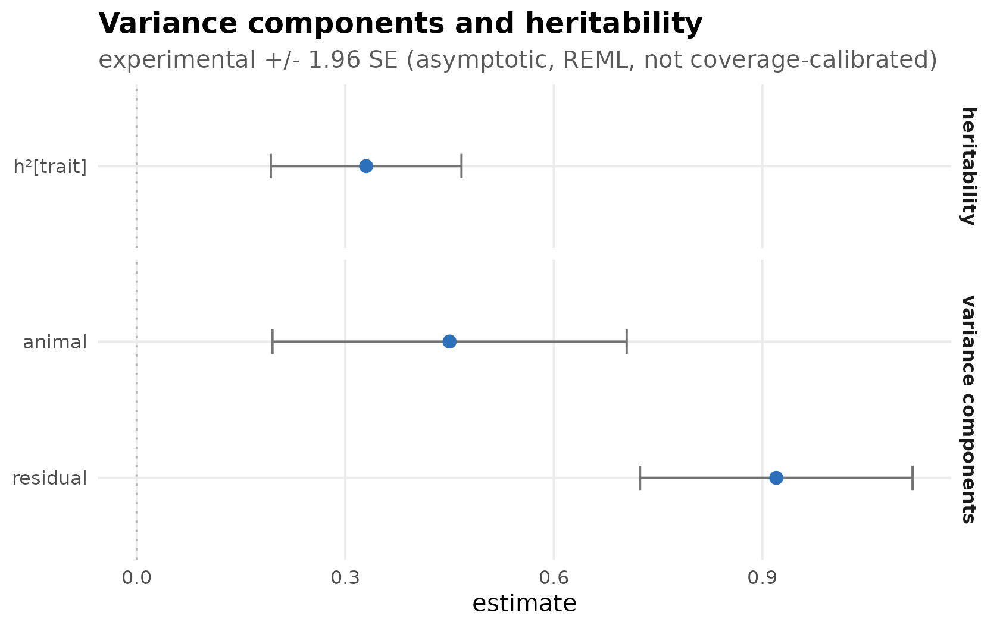
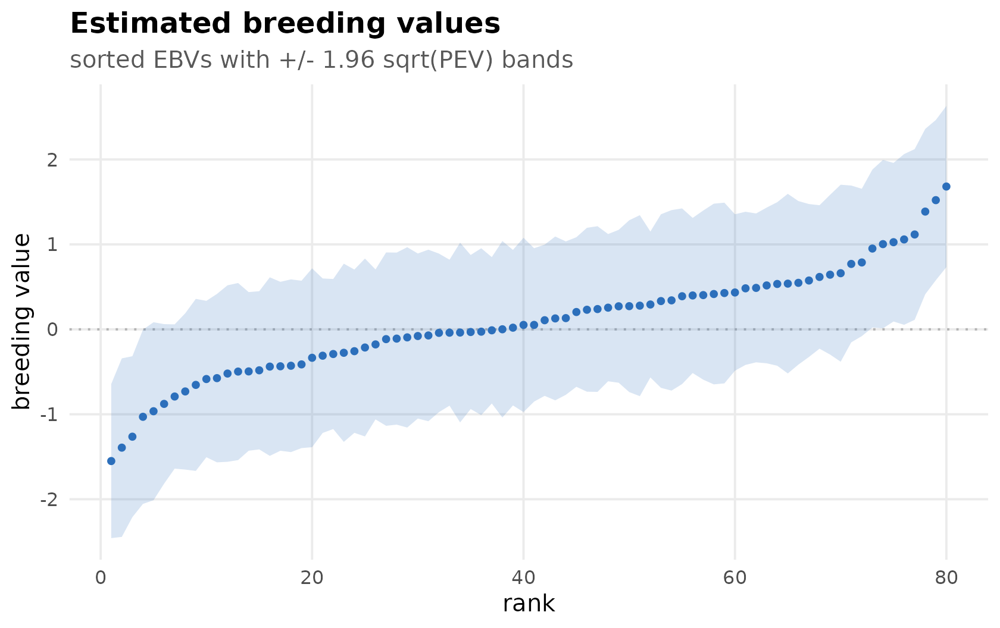
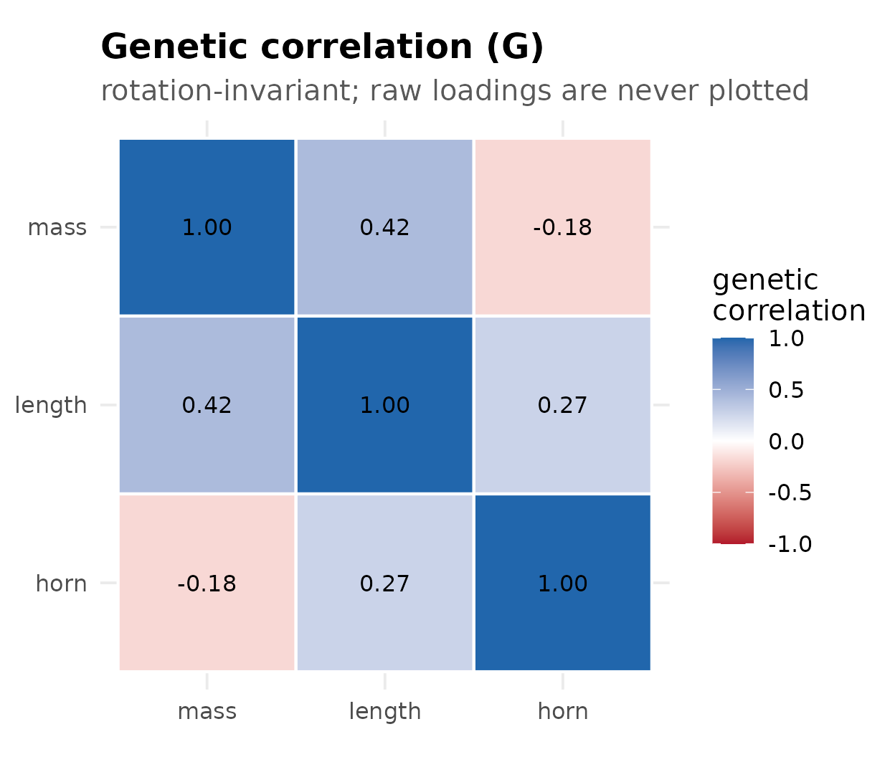
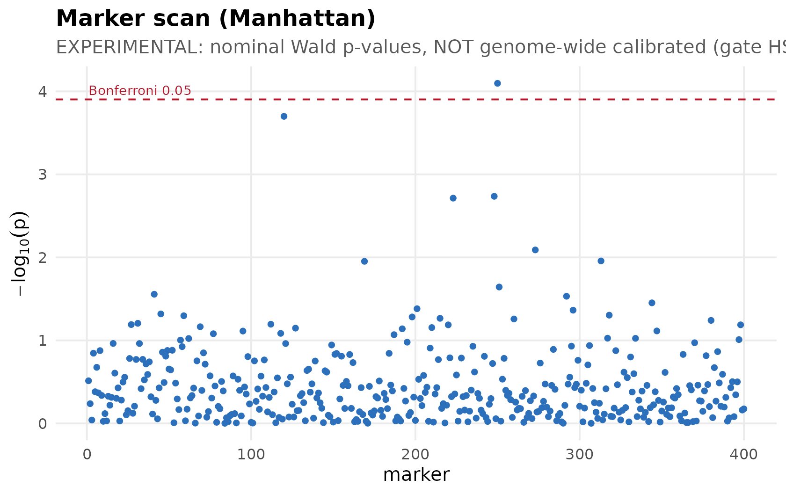

Visualizing an animal model
Source:vignettes/articles/visualizing-models.Rmd
visualizing-models.Rmdhsquared ships a small ggplot2
visualization layer in the style of the
brms/bayesplot ecosystem (and consistent with
the sister packages drmTMB and gllvmTMB).
Every figure is produced by an autoplot() method, returns a
ggplot object you can theme and extend, and is
uncertainty-first: where the fit carries the
experimental standard errors, reliabilities, or prediction error
variances, the figure shows them — clearly labelled experimental and
asymptotic.
In your own analysis, fit is the object returned by
hsquared():
fit <- hsquared(
weight ~ sex + animal(1 | id, pedigree = ped),
data = dat, family = gaussian(), REML = TRUE
)
autoplot(fit, "variance")The figures below are rendered from small illustrative fit
objects so the article is self-contained (no engine required to
build the page); the autoplot() calls are exactly what you
would run on a real fit.
Variance components and heritability
autoplot(fit, "variance") draws a horizontal forest of
the variance components and per-trait h², with approximate
95% intervals (± 1.96 · SE) when the fit carries the
experimental standard errors.
autoplot(fit, "variance")
Breeding values
autoplot(fit, "breeding_values") draws the sorted
estimated breeding values as a caterpillar, with
± 1.96 · √PEV bands when prediction error variances are
available (faceted by trait for multivariate fits).
autoplot(fit, "breeding_values")
Genetic correlation (G)
autoplot(fit, "g_matrix") draws the genetic-correlation
matrix of an opt-in multivariate fit. It is
rotation-invariant — correlations do not depend on the
factor rotation — so it is well defined for any multivariate fit; raw
factor loadings are never plotted (the ratified cross-lane
convention).
autoplot(fit_mv, "g_matrix")
Marker scan (Manhattan)
autoplot() on the result of
gwas(fit, markers) draws a Manhattan plot. The p-values are
nominal Wald p-values and are not genome-wide
calibrated — the figure carries that banner, and the dashed
line is a plain Bonferroni reference, not a validated genome-wide
threshold.
autoplot(gw)
Known-truth recovery studies
hs_recovery_forest() visualizes a known-truth recovery
study (such as data-raw/multivariate-recovery-study.R):
each target’s bias with its ± 2 · MCSE interval. Intervals
that cover zero indicate no detectable bias.
recovery <- data.frame(
target = c("G0[1,1]", "G0[2,1]", "G0[2,2]", "R0[1,1]", "R0[2,1]",
"R0[2,2]", "rg", "h2[1]", "h2[2]"),
bias = c(-0.00395, 0.00621, -0.01459, 0.01171, -0.01223, -0.00106,
0.01652, -0.00756, -0.00676),
mcse = c(0.02221, 0.01397, 0.01726, 0.01387, 0.01164, 0.01199,
0.01553, 0.00817, 0.00697)
)
hs_recovery_forest(recovery)
Theming
Every figure returns a ggplot object, so you can restyle
it with the usual ggplot2 grammar, and
theme_hsquared() is exported for reuse:
autoplot(fit, "variance") +
ggplot2::labs(title = "My trait") +
theme_hsquared(base_size = 14)